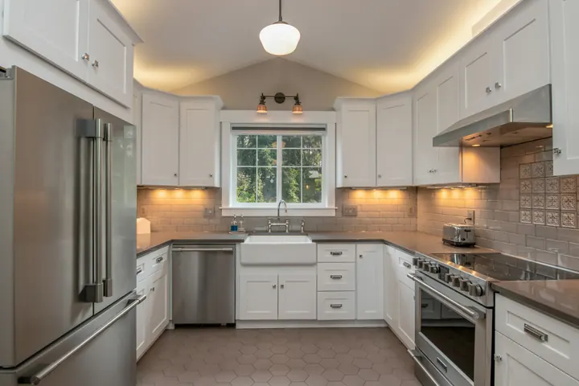
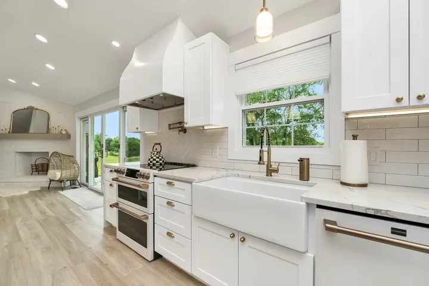
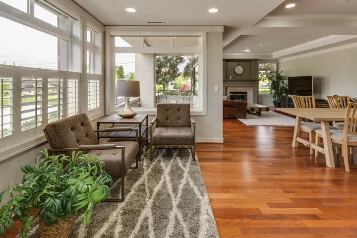

Kitchen remodeling
Decide first whether the sink, range and refrigerator stay where they are. Moving them adds plumbing, gas and electrical work and a permit.
Fairfax is inside our service area from Olney. We plan kitchens, bathrooms and lower levels, and we start by checking whether the house is in the City of Fairfax or elsewhere in Fairfax County.

Each room starts with how it is used today.

Decide first whether the sink, range and refrigerator stay where they are. Moving them adds plumbing, gas and electrical work and a permit.
A hall bath shared by children and guests needs durable surfaces and storage. A primary bath is planned around the shower and the vanity.

Finishing a basement needs permits in both the City and the County. Moisture, ceiling height and egress requirements are part of the plan.
We also take on small repairs around the house. Ask about a small repair
The City of Fairfax is an independent city with its own permit office.
The address tells us which office applies. Add the room and photos, and we set a consultation on priorities, budget range and timing.
Schedule a ConsultationInside the City of Fairfax, the City’s Code Administration. Elsewhere, Fairfax County Land Development Services.
Yes. The City says a zoning permit is approved before the building permit is issued; see its permit page.
It is inside our service area. We confirm each address and what Virginia requires before any agreement.
Tell us the room, your timing and your ZIP code. We review each request and reply about the next step.